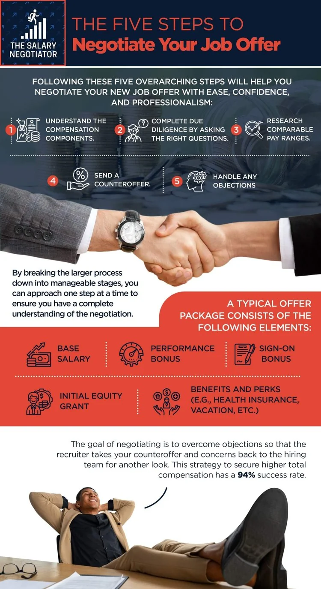

Here's a statistic that should make every professional uncomfortable: according to research by Fidelity Investments, 58% of job seekers accepted the first salary offer without negotiating. Meanwhile, those who did negotiate typically secured an average of $5,000 more per year — sometimes significantly more. Over a 10-year career, that compounding difference can amount to $100,000 or more in lost earnings.
Salary negotiation is not confrontational, greedy, or risky — it is a professional expectation. Employers budget for it. Hiring managers respect it. And the candidates who do it consistently earn more, feel more valued, and set stronger trajectories for future raises and promotions.
This complete guide walks you through every stage of salary negotiation — from pre-offer research to final acceptance — with real scripts, specific tactics, and the psychological principles behind why they work.
of employers say they expect candidates to negotiate, yet fewer than half of job seekers actually do. Negotiating is not just acceptable — it's anticipated.
Step 1: Research and Know Your Market Value
STEP 1 OF 8Effective salary negotiation starts weeks before you receive an offer. Your number must be anchored in data, not gut feeling. Employers negotiate for a living — you need to come prepared with the same level of market intelligence they have.
Where to research salary data:
- Glassdoor Salary: Search by job title, company, and location. Filter by years of experience for accuracy.
- LinkedIn Salary: Shows compensation ranges broken down by industry, company size, and geography.
- Levels.fyi: Essential for tech roles — shows total compensation including base, bonus, and equity.
- Payscale: Good for personalised salary reports factoring in certifications and education level.
- Bureau of Labor Statistics (BLS): Official government data, best for baseline benchmarks.
- Industry salary surveys: Many professional associations publish annual compensation reports for their sector.
- Recruiter conversations: Recruitment agencies like Talent Loop have real-time compensation data across industries — ask directly for ranges before applying.
Factors that justify a higher salary:
- Specialised certifications or technical skills in high demand
- Bilingual or multilingual ability
- Proven, quantified results (revenue generated, costs reduced, teams led)
- Relocating to a higher cost-of-living city
- Leaving a competing offer or current role with strong compensation
A Strong Resume Gets You to the Negotiating Table
Before you can negotiate your salary, you need to land the interview. Build an ATS-optimised resume that gets noticed — with LiveCareer's professional builder.
Build My Resume with LiveCareer →* Affiliate link — we may earn a commission at no extra cost to you. See our affiliate disclosure.
Step 2: Know When (and When Not) to Negotiate
STEP 2 OF 8Timing is one of the most underrated factors in salary negotiation. Negotiate too early and you appear presumptuous. Negotiate too late and you've already signed. The perfect window is after you receive a formal written offer, but before you sign.
| Situation | Should You Negotiate? |
|---|---|
| Received a written job offer | ✅ Yes — this is the ideal moment |
| Asked salary expectations during initial screening | ⚠️ Deflect if possible — it's too early |
| After first interview, no offer yet | ❌ No — you don't have leverage yet |
| Annual performance review | ✅ Yes — prepare with documented results |
| After completing a major project | ✅ Yes — strike while value is visible |
| After receiving a competing offer | ✅ Yes — highest leverage moment possible |
Step 3: Never Be the First to Name a Number
STEP 3 OF 8This is the single most important tactical principle in salary negotiation. Whoever names a number first anchors the entire negotiation. If you go first and guess low, you've permanently capped the conversation. If the employer goes first, you get to respond from a position of information rather than assumption.
When asked "What are your salary expectations?" before an offer, use deflection language that buys you time without sounding evasive:
"I want to make sure we're aligned on the full scope of this role before settling on a number. Could you share the budgeted range for this position? I'm confident we can find something that works well for both of us."
"Based on my research of market rates for this role and location, I've seen ranges from $X to $Y. I'm curious where this role falls within your compensation structure — what's the range you have in mind?"
"I'm flexible and open to a fair offer. Based on my experience and the market data I've gathered, I'm targeting the $X–$Y range, but I'd love to hear what you have in mind first."
Step 4: How to Make a Winning Counteroffer
STEP 4 OF 8You've received an offer. Now comes the part most candidates skip — the counteroffer. Research consistently shows that employers who make an initial offer almost always have a higher ceiling. The first number is rarely the best number they can offer.
The anatomy of an effective counteroffer:
- Express genuine enthusiasm first — before anything else, communicate that you're excited about the role.
- Acknowledge the offer — thank them for it. Never respond with disappointment or silence.
- State your counter with confidence — give a specific number, not a range.
- Justify with data — cite your research and your value, not personal need.
- Stay silent — after stating your counter, stop talking. Let them respond.
"Thank you so much for the offer — I'm genuinely excited about this role and the team. After reviewing the offer carefully and researching current market rates for this position in [city], I was hoping we could get closer to $[X]. Based on my [X years of experience / specific skill / measurable achievement], I believe this reflects the value I'll bring to the team. Is that something we can work toward?"
Step 5: Negotiate the Full Compensation Package
STEP 5 OF 8Base salary is just one line in your compensation package. Many employers have strict base salary budgets but significant flexibility in other areas.

Every element of compensation you can negotiate:
| Component | What to Ask For | Value Potential |
|---|---|---|
| Base Salary | 10–20% above initial offer | High |
| Signing Bonus | $3,000–$20,000+ depending on seniority | High (one-time) |
| Annual Bonus | Guaranteed first-year minimum | Medium-High |
| Equity / Stock Options | Increased grant or accelerated vesting | Very High |
| Extra PTO | +5 to 10 additional days | Medium |
| Remote Work | Full remote or hybrid flexibility | High (lifestyle) |
| Earlier Performance Review | 6-month review instead of 12-month | Medium (long-term) |
| Professional Development | $2,000–$5,000 annual learning budget | Medium |
| Title Upgrade | Senior vs. mid-level designation | High (long-term) |
| Relocation Assistance | Moving costs, temporary housing | Variable |
Step 6: Real Word-for-Word Scripts That Work
STEP 6 OF 8The most common reason people don't negotiate is not knowing what to say. Here are scripts for every scenario you might face.
When the offer comes in lower than expected:
When they say "that's the best we can do":
When you have a competing offer:
Asking for time to consider:
Looking for Roles With Better Pay Potential?
FlexJobs lists thousands of verified remote, hybrid, and flexible roles across 50+ categories — many with salary ranges posted upfront. Use code FLEXLIFE for up to 30% off.
Browse FlexJobs Listings →* Affiliate link — we may earn a commission at no extra cost to you. See our affiliate disclosure.
Step 7: Negotiating Remote Work and Flexible Arrangements
STEP 7 OF 8In 2026, workplace flexibility is a compensation component. Research from Stanford estimates that full remote work is worth approximately 8% of salary to the average employee when accounting for commute costs, time saved, and quality of life.
How to negotiate flexibility:
- Frame it as a productivity benefit: "I've consistently delivered higher output working remotely — my last employer saw a 30% increase in my project completion speed."
- Propose a trial period: "Could we start with a 3-month hybrid arrangement and review based on output?"
- Offer concrete accountability measures: "I'm happy to commit to weekly check-ins and clear deliverable milestones."
Step 8: How to Negotiate a Raise at Your Current Job
STEP 8 OF 8Negotiating a raise follows the same principles as negotiating a job offer, with one key difference: you're negotiating with someone who already knows your work.
The raise negotiation framework:
- Document your accomplishments — build a running list with specific numbers from the past 12 months
- Research market rates — know what someone with your skills earns at other companies right now
- Choose the right moment — after a significant win, during budget season, or at your annual review
- Book a dedicated meeting — don't ambush your manager in passing
- Name your number first — anchor early in raise conversations because you already know the constraints
Common Salary Negotiation Mistakes to Avoid
- Apologising for negotiating. Never say "Sorry to ask, but..." — it signals weakness before you even begin.
- Using personal needs as justification. Your market value and results are what matter — not your rent.
- Giving a range when asked for a number. Ranges always anchor to the low end. Give a specific number.
- Accepting or rejecting on the spot. Always ask for 24–48 hours to review any offer.
- Negotiating by email when phone is possible. Tone and rapport matter enormously in compensation conversations.
- Accepting a verbal offer without written confirmation. Never resign until you have a signed offer letter.
- Burning bridges over compensation. If you can't reach agreement, decline gracefully.
Your Complete Salary Negotiation Checklist
- Researched salary range using at least 3 independent sources
- Identified target salary at the 75th percentile of market data
- Prepared 3–5 specific, quantified achievements to justify your ask
- Practiced your scripts out loud before the conversation
- Let the employer make the first offer
- Requested 24–48 hours to consider the offer before responding
- Submitted counteroffer with a specific number and data-backed justification
- Explored all components of total compensation, not just base salary
- Confirmed final agreed terms in writing before signing
- Sent a thank-you note regardless of outcome
Frequently Asked Questions About Salary Negotiation
When should you negotiate your salary?
The ideal time to negotiate is after receiving a formal written offer but before signing. Avoid negotiating during the first interview — you have very little leverage that early.
How much should you counter offer on a salary?
A professional counteroffer is typically 10–20% above the initial offer, grounded in market data. Always justify your number with research — not personal circumstances.
Can you lose a job offer by negotiating salary?
Losing a job offer over a professional, respectful salary negotiation is extremely rare. Employers expect negotiation and have budgeted for it.
What if the employer says the salary is non-negotiable?
Shift your focus to other components: signing bonuses, extra vacation days, remote work arrangements, professional development budgets, or an earlier performance review date.
Is it better to negotiate salary by email or phone?
Phone or video call is almost always better. Use email to confirm what was agreed verbally.
How do you negotiate salary for a remote job?
For remote roles, research both the company's headquarter city rates and your local market. Counter with the value of your skills and output record — not your zip code.
Ready to Find a Role That Pays What You're Worth?
At Talent Loop, our career consultants have real-time compensation data across industries and direct relationships with Fortune 500 companies and fast-growing startups. We'll help you understand your true market value and negotiate the offer you deserve.
Take Our Free Career Assessment